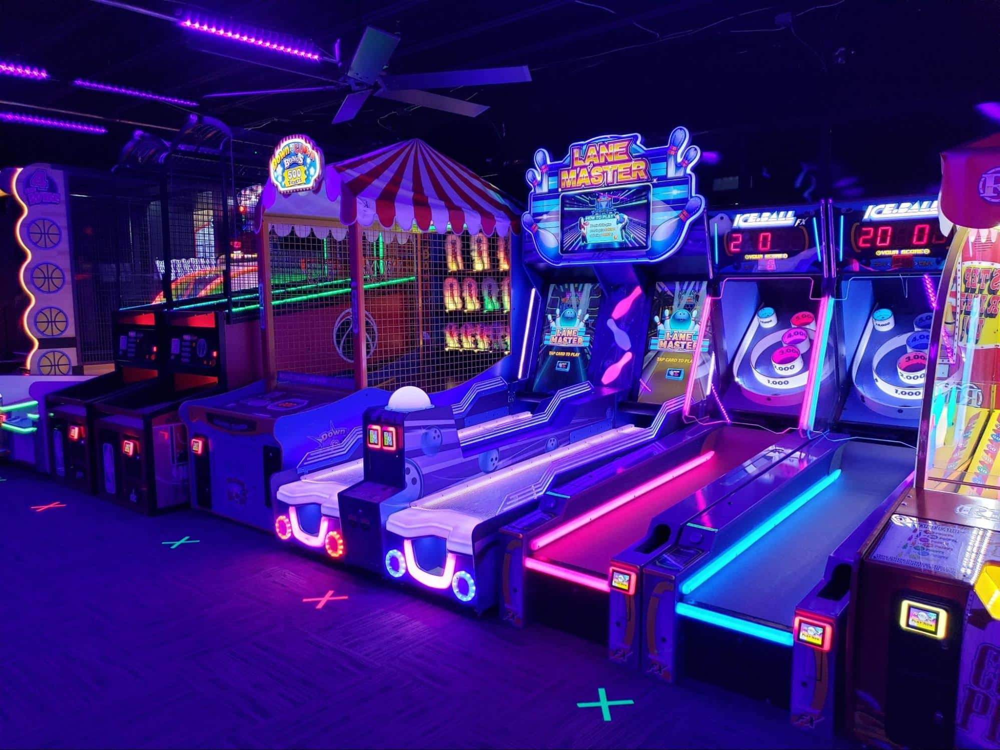
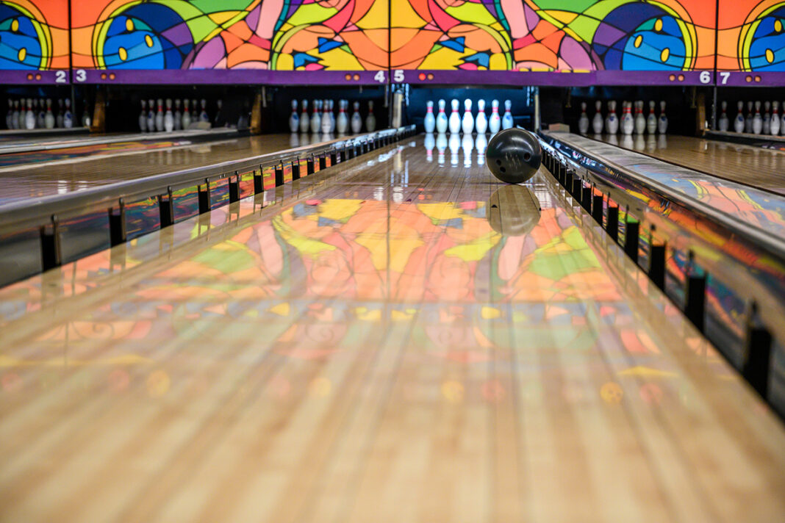
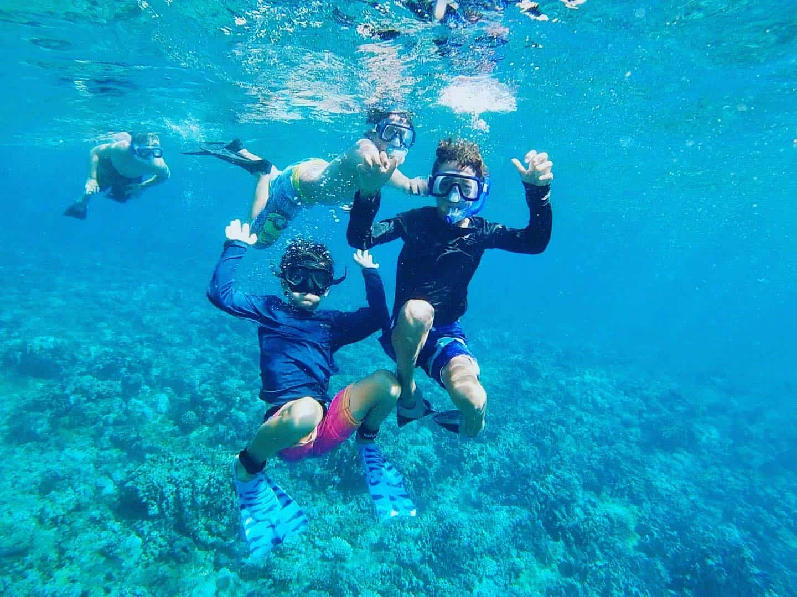
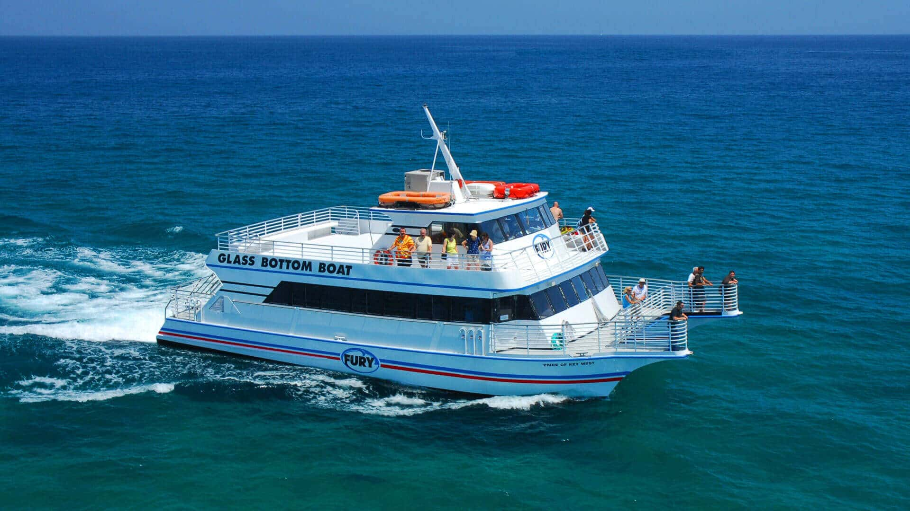
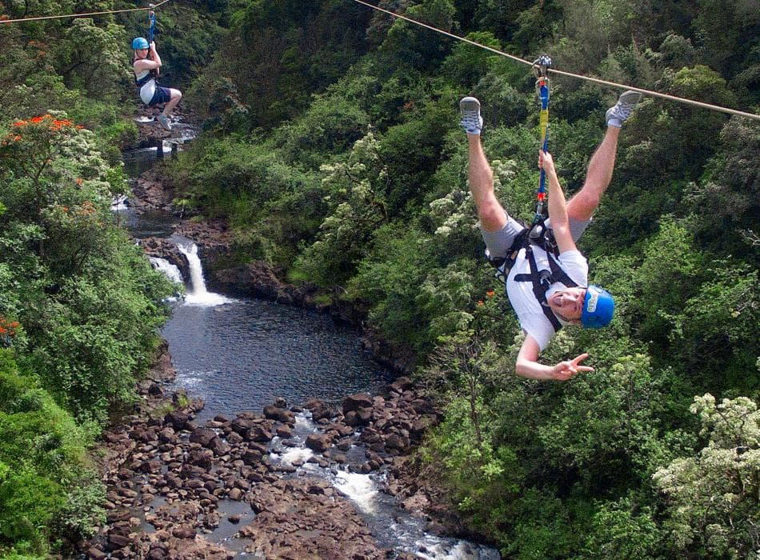
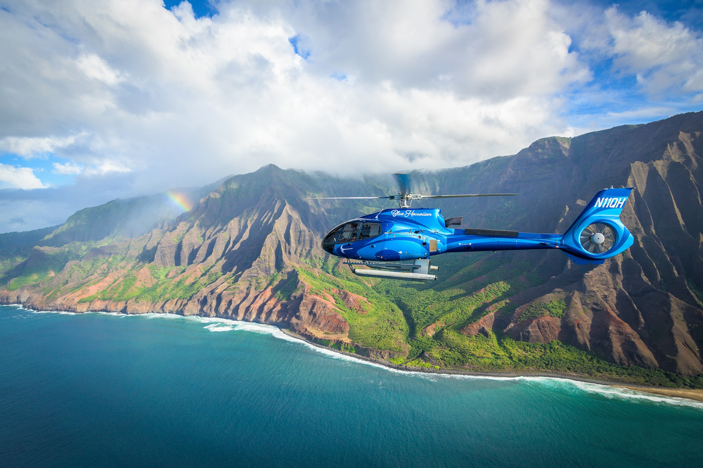

Taniti offers a variety of entertainment options that keep the whole family entertained. Younger visitors can enjoy the arcade and bowling alley, or catch a movie at the local cinema. Culture-seekers can visit our local history museum to learn about the island's heritage. For evening fun, there is a new dance club and several pubs, including a popular microbrewery. Note: Please check local laws for dining hours and entertainment schedules.
Most tourists spend their time relaxing on the beautiful white sandy beaches that encircle Yellow Leaf Bay. For a more active approach to the water, book a chartered fishing tour or try your hand at snorkeling. You can also take a guided boat or bus tour of the island to see the coastline from the water. If you prefer to stay on land, the area surrounding Merriton Landing is easily walkable and full of beach access points.
The island’s mountainous interior offers an adrenaline rush for the brave and adventurous. You can hike through the lush tropical rainforests to visit the active volcano, or experience a bird's-eye view from a helicopter ride. For the ultimate thrill, zip-line through the canopy for a breathtaking view of the landscape. Whether you are looking for a relaxing day or an active adventure, Taniti’s terrain provides a unique backdrop for your vacation.





